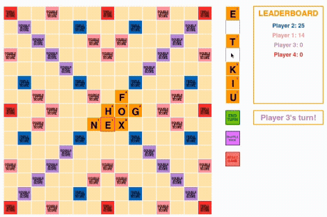

Hola! Soy Lillian, una estudiante de Informática y Lingüística en la Universidad de Cornell. Me interesan muchas cosas, pero actualmente estoy aprendiendo el árabe y desarrollando un juego sobre vampiros.
Cornell University,
Ithaca, NY
B.A. Informática, Lingüistica
Lenguajes:
Python, Java, OCaml, HTML/CSS, JavaScript, SQL, R, Swift
Bibliotecas:
React, Flask, NumPy, Pandas, Matplotlib, Seaborn, Scikit-Learn, PyTorch
Herramientos:
Git, Postman, Docker, DBMS, AWS
Cursos Relevantes:
Backend Development, Data Structures, Object-Oriented Programming,
Functional Programming, Database Systems, (Computer System Organization,
Machine Learning, Natural Language Processing)

Charles Research Group
— Práctica de investigación
Cornell Lab of Ornithology
— Práctica de investigación